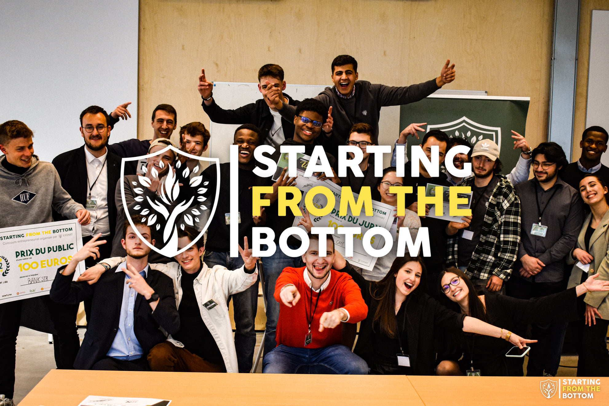

SPECQUE: European Parliament Simulation
July 2022
I had the chance to join SPECQUE, the world's largest Francophone simulation of the European Parliament, in Canada! The event was a mix of learning about EU institutions and meeting youths from various cities like Paris, Brussels, and Prague.
Hosted by Université Laval in Québec, this intense and memorable experience was made possible by the support from the University of Liège, various professors, and friends and family. A big thank you to everyone involved!

Starting From The Bottom – UStart Liège
April 2022
Our team, UStart Entrepreneurship Club in Liège, organized "Starting From The Bottom," a one-day entrepreneurial competition at HEC Liège for ambitious students. With the support of expert speakers and partners like BNP Paribas and Red Bull, participants developed project ideas and showcased motivation, imagination, and perseverance. A heartfelt thanks to everyone involved in making this event a success!
Young Entrepreneur Walking Dinner – UStart Liège
November 2021
Organized and executed a successful €5000 Walking Dinner event with UStart Liège, hosting around 40 guests. It featured speed-dating sessions with seven entrepreneurs from varied fields, providing insights and sharing experiences with students, all accompanied by gourmet tastings. The support from our distinguished partners, including BNP Paribas Fortis Belgique, Xerius, and SOWALFIN, was invaluable in creating this enriching experience.
Study Room Initiative in Verviers
August 2019
With other councillors and Mrs Belly, I helped initiate the first study room in Verviers for college students. It’s a free space where students can prepare for exams from Monday to Friday, 9 am to 9 pm. The announcement of this new facility generated over 100 student registrations within a week. We’re proud to meet this need after three years of demand, enhancing the study environment for local students.
Advocating for Student Support in Verviers
April 2019
During the city council, I addressed the city college, voicing my concerns regarding the €500,000 allocated for modernizing the current library. I emphasized the importance of involving students in discussions to truly understand their needs and make meaningful enhancements to the library. Specifically, I highlighted the critical need for dedicated study spaces and more accommodating schedules during the exam preparation period.
Parlement Jeunesse Secretary Role
February 2019
As a Secretary at Parlement Jeunesse, I was appointed at the start of the session and was one of four, representing each parliamentary group. My primary responsibility was to assist with the smooth running of sessions, including organizing debates, setting agendas, conducting votes, and recording minutes. I also assisted in committees, ensuring amendments were properly recorded, and had deliberative voting rights. I participated actively in debates and discussions, ensuring a seamless flow of parliamentary procedures.